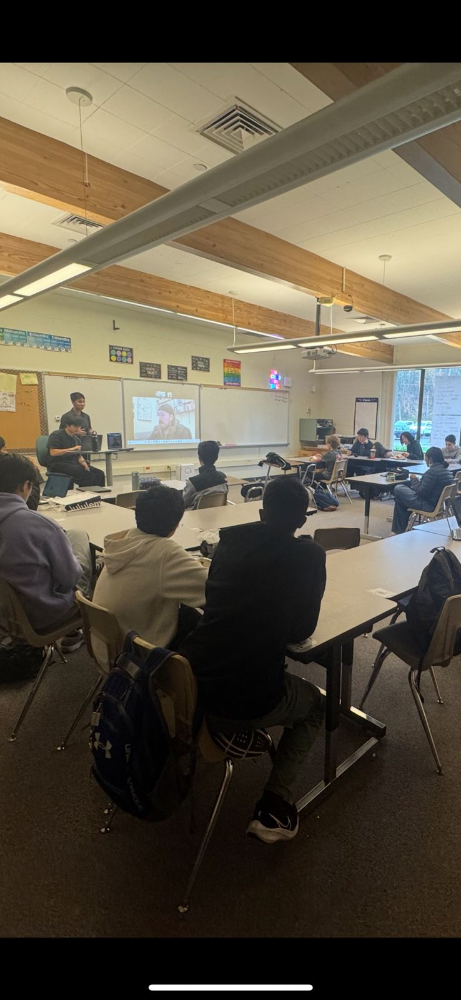
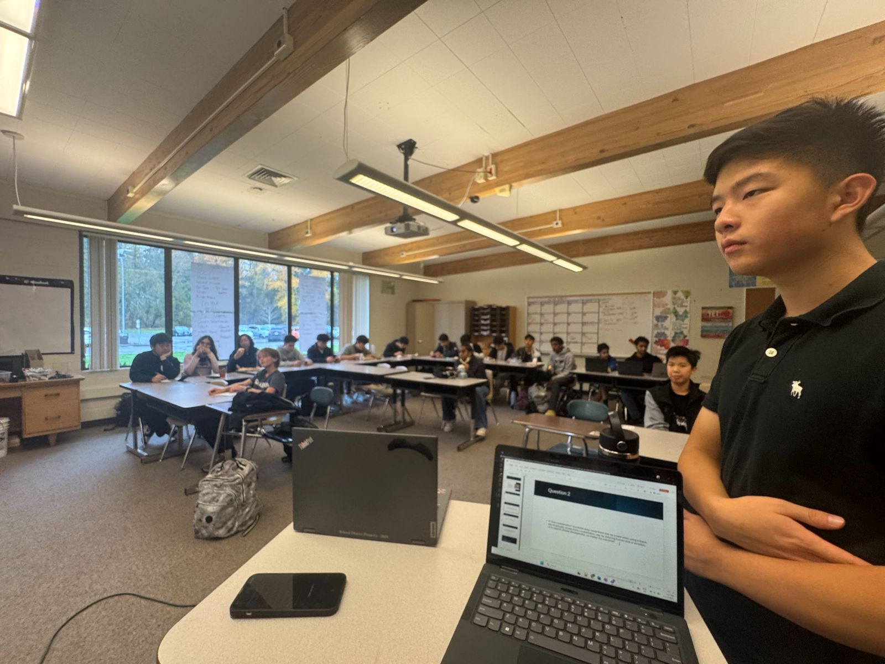
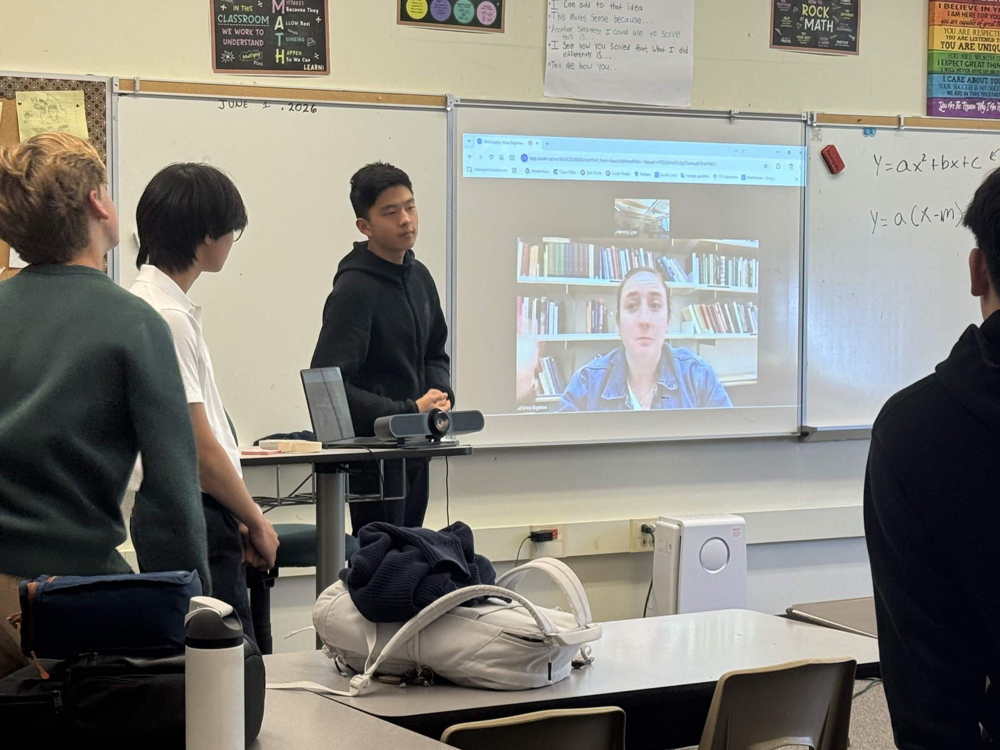

Interviews
Conversations with scholars, thinkers, and professors
Scholar Conversations


November 13, 2025 · ESP Live Interview
A Conversation on AI Ethics with the Director of Ethics @ Harvard
A live interview and discussion with Professor Jeff Behrends, Director of Ethics at Harvard, exploring the ethical dimensions of artificial intelligence, moral responsibility in technology, and the philosophical foundations of AI governance.
Access the Presentation →
June 1, 2026 · ESP Live Interview
A Conversation on Social Philosophy with a UW Philosopher
A live interview and discussion with Erica Bigelow, PhD candidate at the University of Washington, exploring social philosophy, the philosophy of emotion, and how emotional expectations can function as instruments of injustice.
Access the Presentation →May 13, 2026 · Inference Studios
Can Evil and God Exist? The Logical Problem of Evil
Interviewed by Elijah Anteneh (ESP Virginia Team). A conversation with Dr. Graham Oppy, one of the world's leading philosophers of religion, on the logical problem of evil - one of the oldest and most powerful arguments against the existence of God.
Watch on YouTube →June 5, 2026 · Inference Studios
Free Will and Morality
Interviewed by Elijah Anteneh (ESP Virginia Team). A conversation with Dr. Joshua Knobe, professor of philosophy and cognitive science at Yale University and founder of the field of experimental philosophy, on free will, moral responsibility, and how ordinary people think about intentional action.
Watch on YouTube →